ACC user 2026-11-15 ("ACC, kerjakan"), sudah dipasang di game. Usulan 3a-4 sudah di-ACC ("ACC semua", 2026-11-15). Semua gambar diambil dari game (?uji=klinik2, contoh: pemain wanita, Adji). Ini UI saja: efek Trust/Hubungan, jadwal janji, dan teks event semua kandidat ditulis setelah draf ini di-ACC.
1. Ikon barang hadiah (12 baru, 16×16)
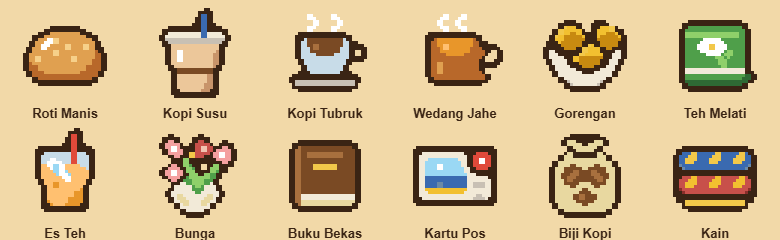
Gaya sama dengan ikon bahan makanan. Bahan, bekal, dan herba yang sudah ada juga bisa dikasih.
Tempat
Barang
Harga
Cara beli
Toko Roti Manis (07-17)
Roti Manis
10rb
Tombol Beli Bungkus di panel nongkrong/membaca
Kedai Kopi Seduh (08-22)
Kopi Susu
25rb
Angkringan (18-24)
Kopi Tubruk · Wedang Jahe · Gorengan
5rb
Perpustakaan & Kebun Bunga (09-19)
Bunga · Buku Bekas
10rb · 15rb
Warung Bu Ratna (06-21)
Teh Melati · Es Teh
5rb · 4rb
Ikut daftar panel Warung
Bahari Medika, Tanjung Arum (08-17)
Kartu Pos · Biji Kopi · Kain
5rb · 40rb · 30rb
E di depan etalase Ci Lina (kanan bawah)
2. Penanda ♥ dan tombol G
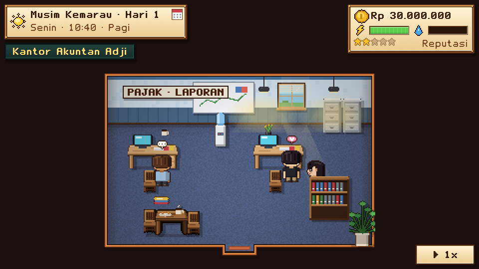
♥ merah muda di atas kepala = event siap (atau dia sedang menunggu di tempat janji). Urutan penanda: ♥ lebih dulu dari ! (adegan Trust) dan … (belum ngobrol).
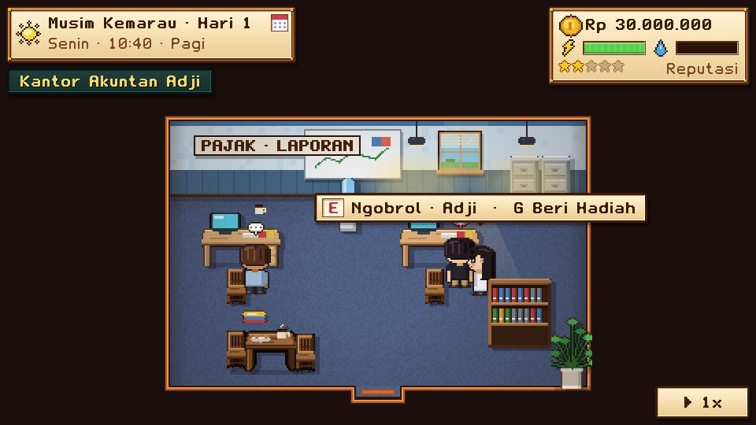
Di dekat orang yang sudah dikenal: E Ngobrol · Adji · G Beri Hadiah.
3. Beri Hadiah
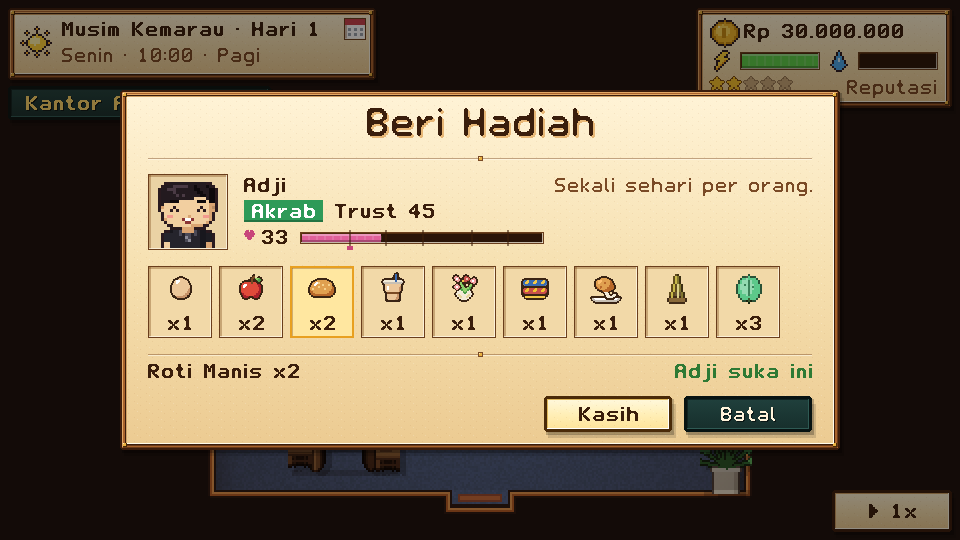
Potret, tingkat Trust, ♥ Hubungan (khusus kandidat romance, garis = ambang E1-E5, titik di bawah garis = event sudah ditonton). Kisi isi Tas. Bawah: selera yang sudah ketahuan ("Adji suka ini" hijau / "tidak suka ini" merah / belum ketahuan). Tombol Kasih · Batal. Tinggi panel ikut jumlah baris.
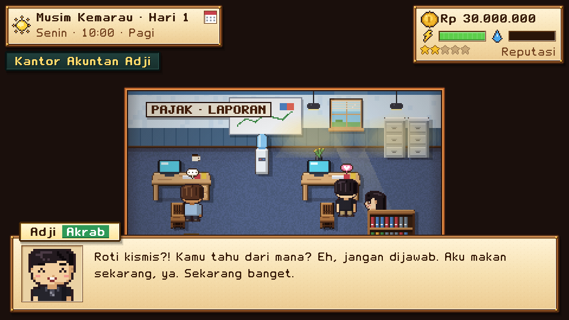
Reaksi dengan suara NPC (3 baris per orang: suka/biasa/tidak suka, ditulis di file narasi baru). Setelah itu toast "Adji suka · Trust +5 · ♥ +6".
Bahari Medika: etalase Ci Lina (perhiasan) juga menjual oleh-oleh. Di 3a-5 etalase ini dipakai untuk cincin.
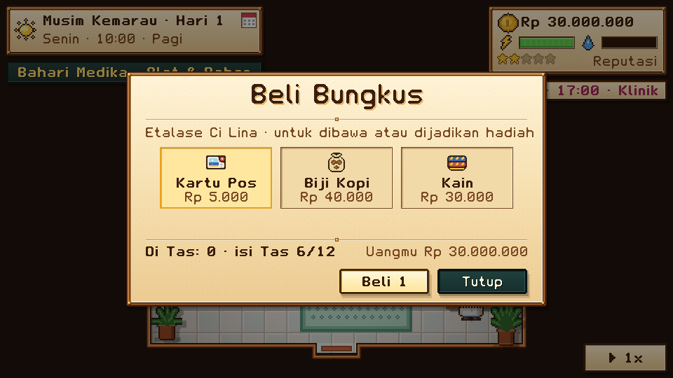
Oleh-oleh Tanjung Arum.
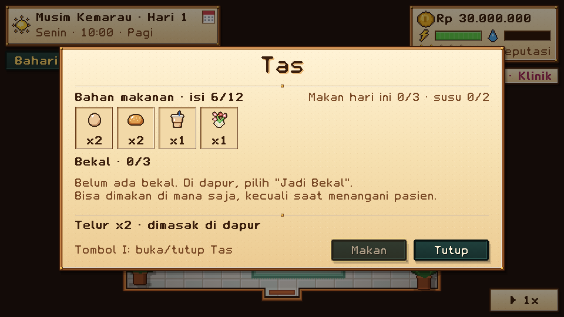
Barang hadiah masuk Tas (memakai isi 12). Saat dipasang: judul jadi "Isi Tas", info barang hadiah = "bisa dijadikan hadiah (G di dekat orang)", dan kisi pindah ke baris kedua kalau jenisnya lebih dari 10.
5. Buku Kenalan · tab Romance
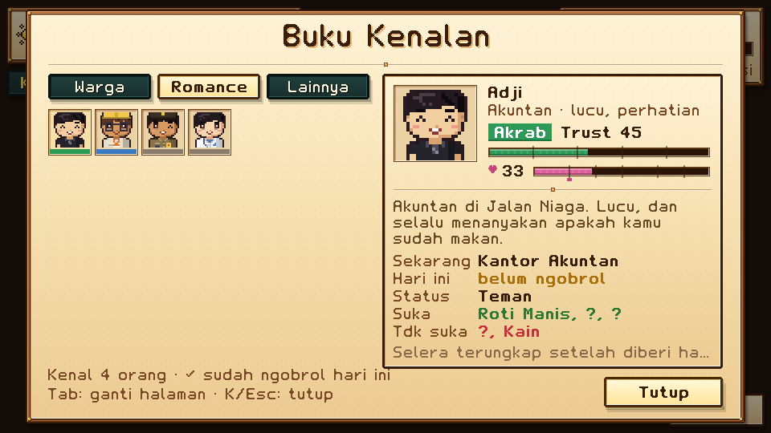
Kandidat romance mendapat bar ♥ Hubungan di bawah bar Trust dan baris Status (Teman / Pacaran / Renggang s.d. hari X). Suka / Tdk suka untuk semua orang: yang sudah ketahuan ditulis (hijau/merah), sisanya "?". Catatan kecil hilang kalau semua sudah ketahuan.
6. Ajakan & janji
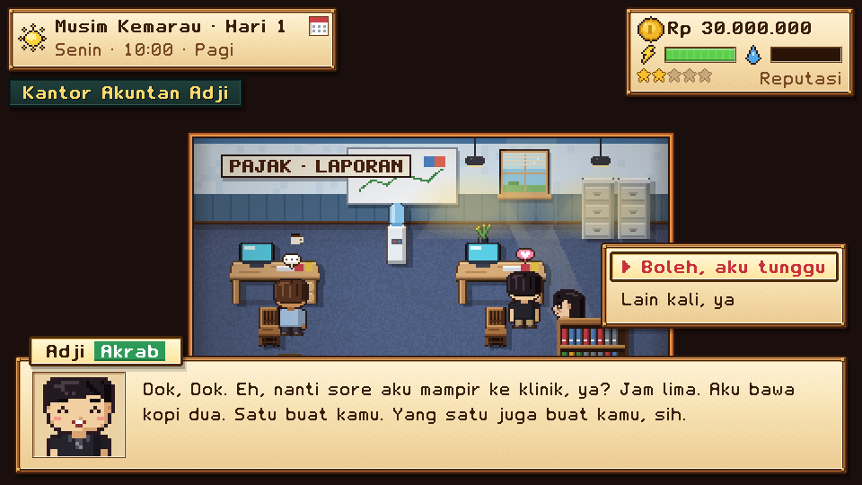
Ngobrol saat ♥: NPC mengajak ketemu di tempat & jam event. Pilihan memakai kotak pilihan dialog yang sudah ada.
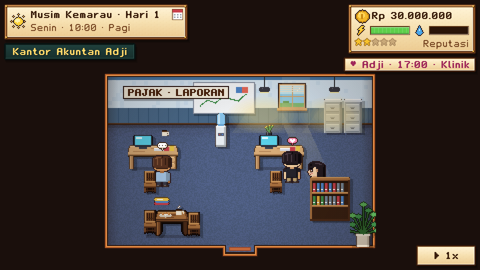
Chip janji di HUD kanan (di bawah chip Fokus kalau ada) sampai janji selesai atau lewat. NPC berangkat jalan kaki dari tempatnya ke tempat janji, lalu menunggu 2 jam.
7. Event
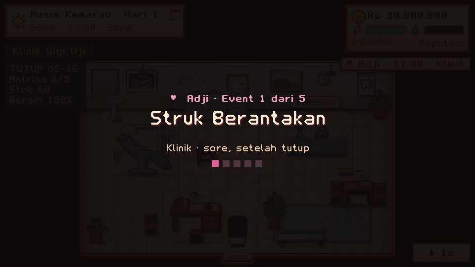
E di dekat NPC yang menunggu: kartu judul (nama · Event n dari 5, judul, tempat & waktu, 5 kotak kemajuan).
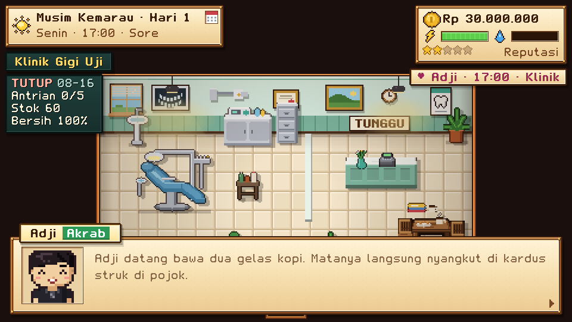
Narasi (abu-abu) dan dialog berpotret, maks 120 karakter per halaman.
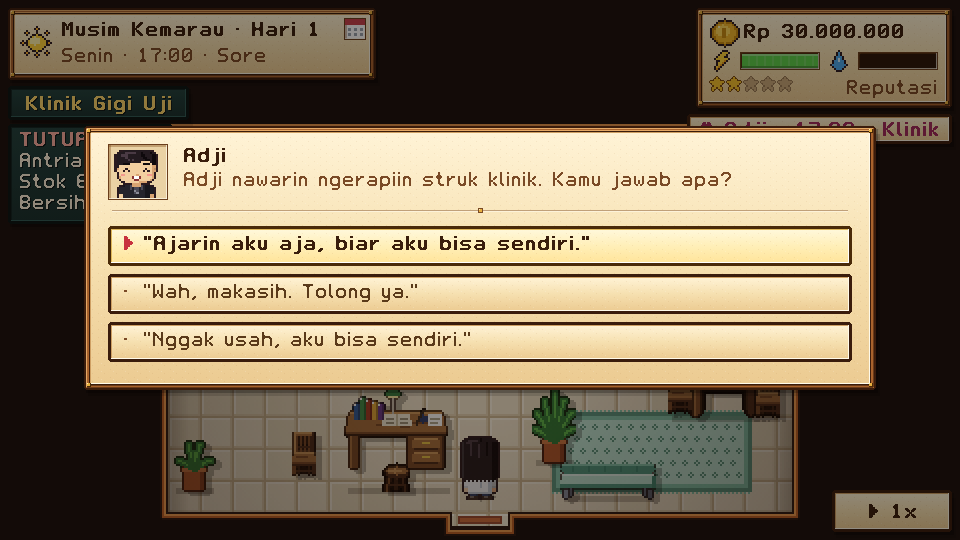
Panel pilihan: 3 jawaban, urutan diacak, teks dibungkus sampai 3 baris. ↑↓ / klik, tidak bisa Esc. Angka Hubungan tidak ditampilkan sebelum memilih.
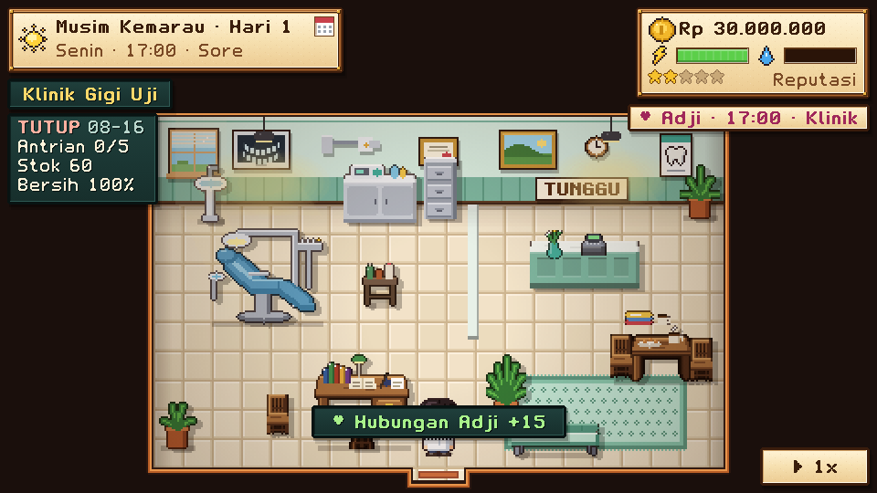
Reaksi NPC, lalu toast ♥ Hubungan (+15 / +5 hijau, -10 merah). Jam maju 30 menit. E5 berhasil: toast "Kamu dan Adji resmi pacaran".
Yang perlu kamu review:
12 ikon barang hadiah, harga, dan tempat belinya (oleh-oleh di etalase Ci Lina).
Penanda ♥, teks prompt "G Beri Hadiah", panel Beri Hadiah, panel Beli Bungkus.
Buku Kenalan: bar ♥, Status, Suka/Tdk suka yang terungkap.